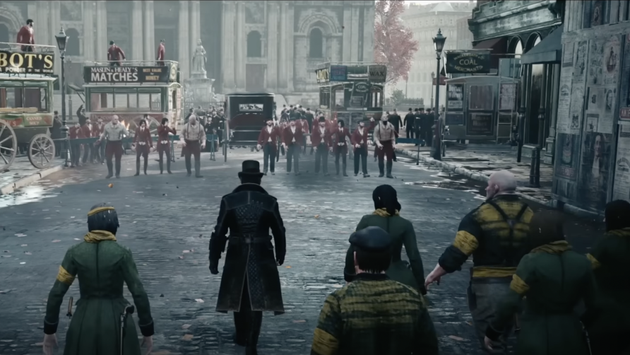
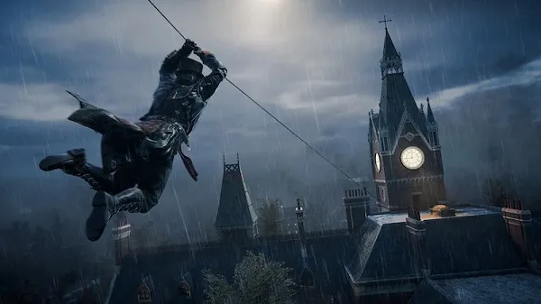
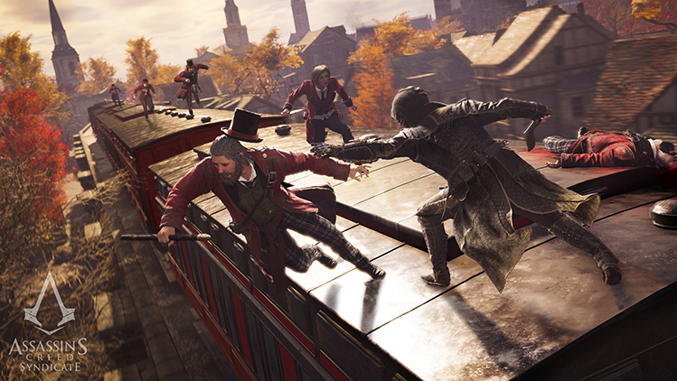

Assassin's Creed Syndicate
Contextualização sobre Assassin's Creed
"Assassin's Creed" é uma série de jogos de vídeo game que mergulha os jogadores em uma viagem através de diferentes épocas históricas, fundindo elementos de ficção científica, história e aventura. O enredo central gira em torno de uma guerra ancestral entre duas facções secretas: os Assassinos, defensores da liberdade e do livre arbítrio, e os Templários, que buscam controle e poder absoluto.

No Assassin's creed Syndicate o seu enredo decorre em Londres, em 1868, durante a Revolução Industrial, e conta a história dos gêmeos Jacob Frye e Evie Frye que percorrem o mundo do crime organizado na Era Vitoriana, lutando para restabelecer a ordem controlada pelos Templários.

Syndicate recebeu análises, em geral, positivas da imprensa especializada, elogiado quase por unanimidade como uma melhoria de Unity. As criticas recaíram sobretudo, pelo jogo não ter melhorado a fórmula, sendo muito parecido com os títulos anteriores. A sua sequência, Assassin's Creed Origins, foi lançada em outubro de 2017
Jogabilidade
Em Syndicate, os jogadores podem usar carruagens para percorrer a cidade de Londres. Tal como nos jogos anteriores da série, Assassin's Creed Syndicate permanece com a perspectiva na terceira pessoa e a exploração em mundo aberto. Syndicate é a primeiro jogo da série Assassin's Creed em que o jogador pode trocar livremente entre dois protagonistas, algo similar a Grand Theft Auto V, e o primeiro com uma protagonista feminina Assassin's Creed III: Liberation também tinha uma protagonista, mas não faz parte da série principal.
O protagonista masculino, Jacob Frye, descrito como um "lutador carismático," é mais forte no combate e especializado no corpo-a-corpo,enquanto que a sua irmã gémea Evie, é melhor em acções furtivas, apoiando-se na sua inteligência e engenho. Cada um dos protagonistas tem as suas próprias missões especificas, cada qual com o seu desenvolvimento de experiência e habilidades. As armas principais dos Assassinos incluem a soqueira, um revólver compacto, uma bengala-espada e as kukri, facas curvas tradicionais do Nepal. O combate é mais rápido com a latência a ser cortada em metade em que vários inimigos podem atacar ao mesmo tempo.
Novos sistemas de navegação fazem a sua estreia neste jogo, tal como o lança-cordas, que permite ao jogador subir estruturas em rappel ou para criar uma tirolesa entre edifícios/estruturas, as carruagens, que podem ser conduzidas ou simplesmente ser ocupadas pelo jogador, os comboios e os barcos. As carruagens também podem ser usadas para ocultar inimigos raptados, para se esconder, ou para se colocar no seu topo durante as lutas e nas perseguições em parkour
Sinopse do jogo
Em 1868, durante o período final da Revolução Industrial, com a Irmandade dos Assassinos erradicada, os gémeos Jacob (Paul Amos) e Evie Frye (Victoria Atkin) deixam Crawley e dirigem-se para Londres. Ao chegarem encontram uma cidade controlada pelos Templários, em que tanto a Igreja como a Monarquia estão a perder o poder. Criados como Assassinos para seguirem os ensinamentos da Irmandade, Jacob e Evie querem restabelecer a ordem retirando o controlo feito por Crawford Starrick, um terrível Templário industrialista, e infiltrando-se no mundo do crime organizado de Londres.Em adição, são apresentadas durante a história as "anomalias temporais". Ao acedê-las o jogador é levado para outras épocas da história de Londres.
Curiosidades
- A Revolução Industrial: O jogo explora intensamente o período da Revolução Industrial, mostrando a transformação da sociedade, a urbanização e os avanços tecnológicos da época.
- Conflito de Classes: O jogo aborda fortemente as questões sociais da época, destacando a disparidade entre as classes sociais e as condições precárias de trabalho.
- Participação de Figuras Históricas: Assim como outros jogos da série, "Syndicate" apresenta figuras históricas famosas da época, como Charles Darwin, Charles Dickens e Alexander Graham Bell, entre outros.
- Recrutamento de Gangues: Uma novidade foi a capacidade de recrutar e liderar uma gangue para lutar contra as forças opressoras e controlar diferentes áreas de Londres.
- A Criação do Sindicato Assassino: Jacob e Evie trabalham para unir gangues sob a bandeira dos Assassinos, formando um sindicato para combater os Templários.